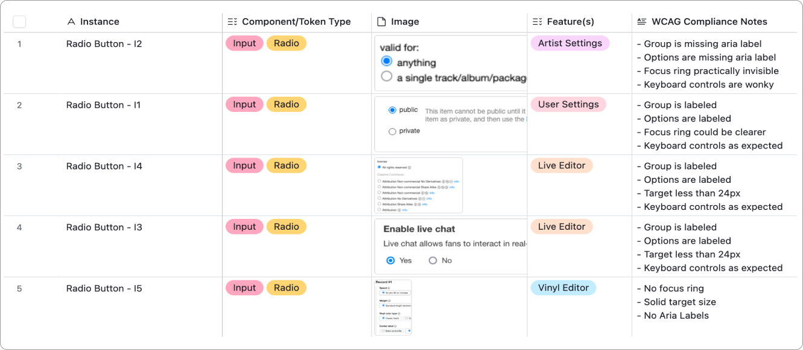
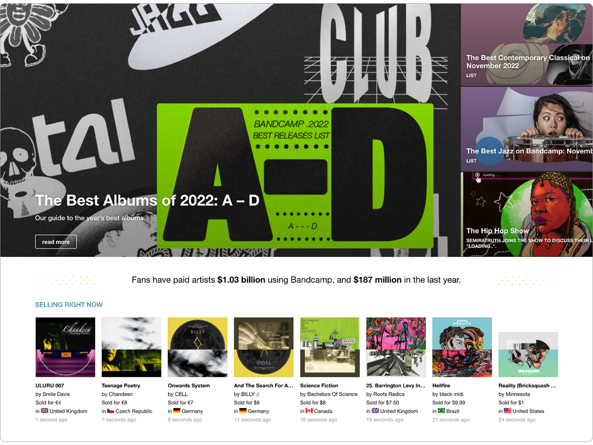
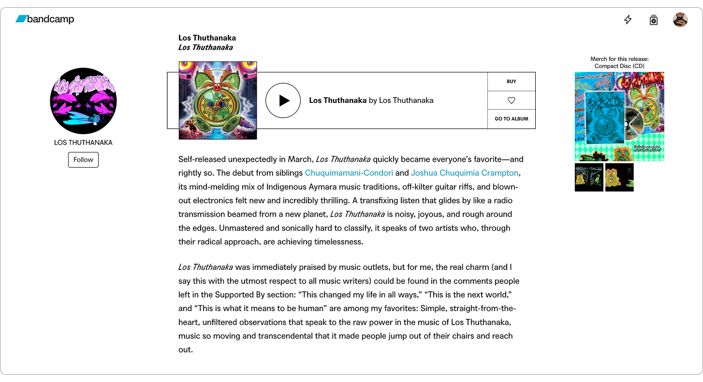
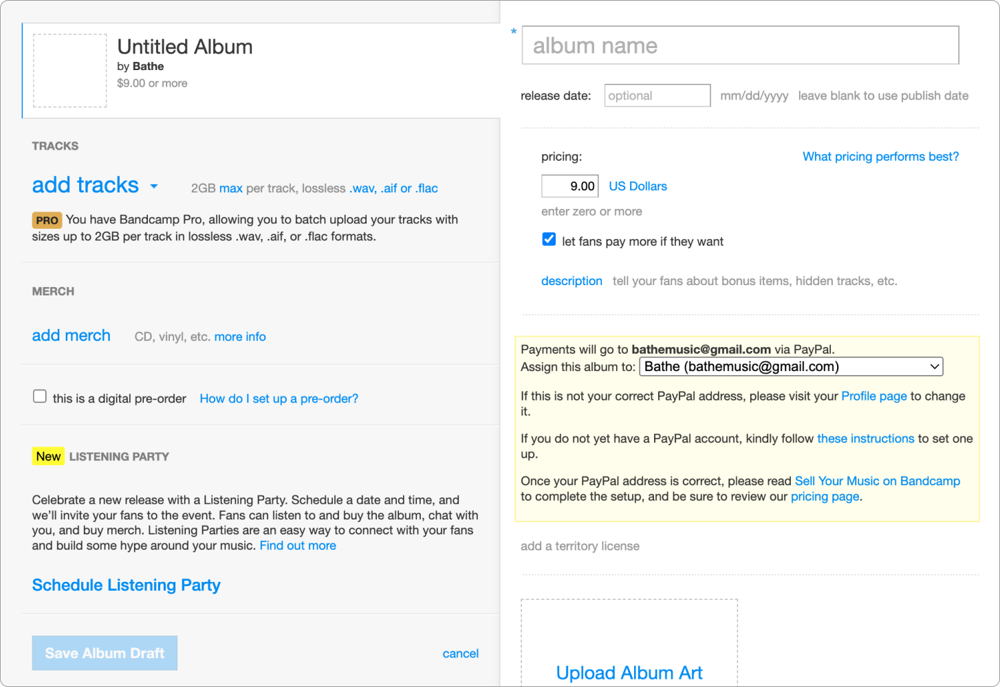
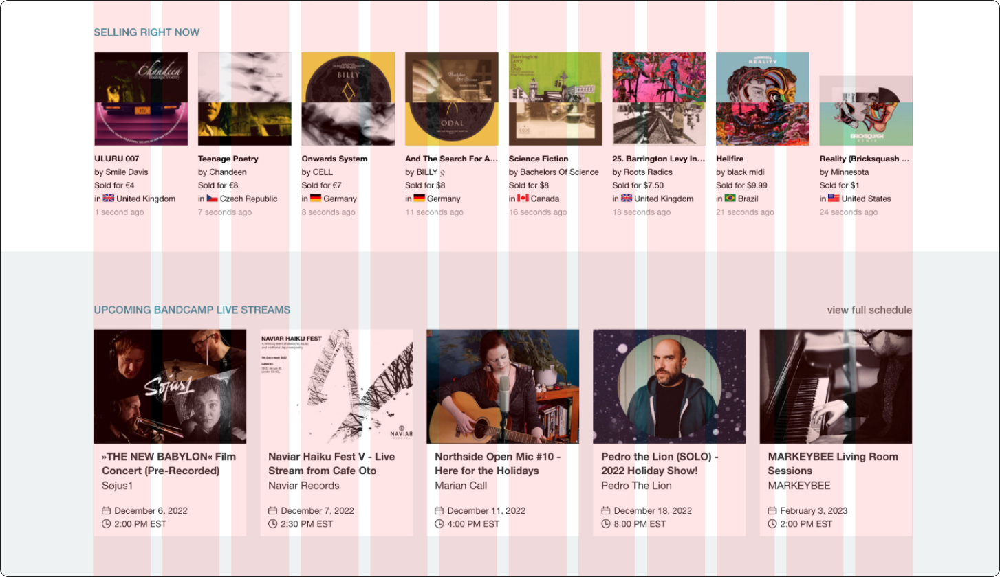
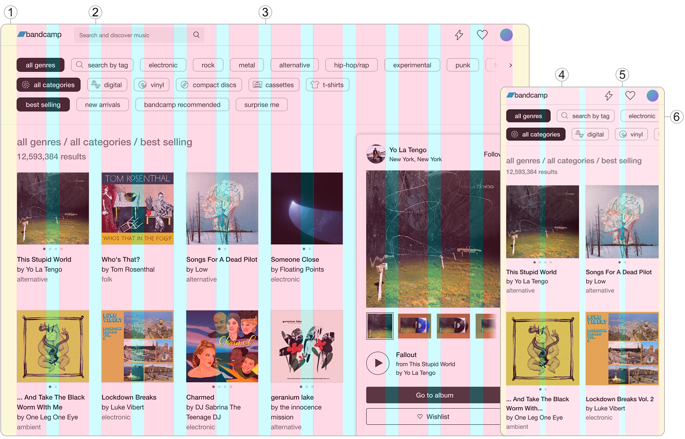
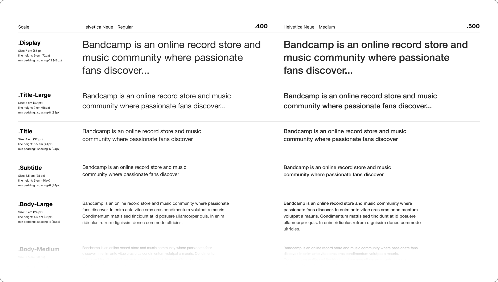
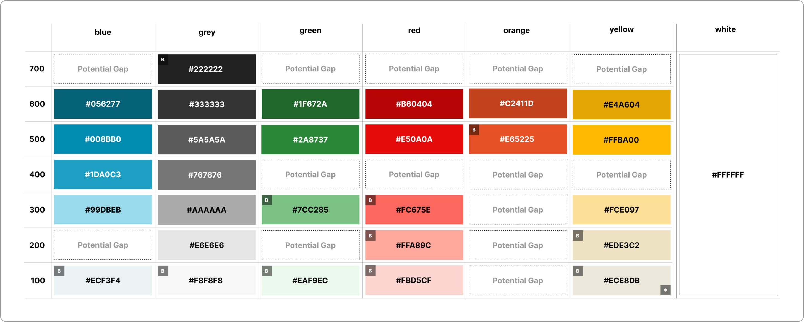
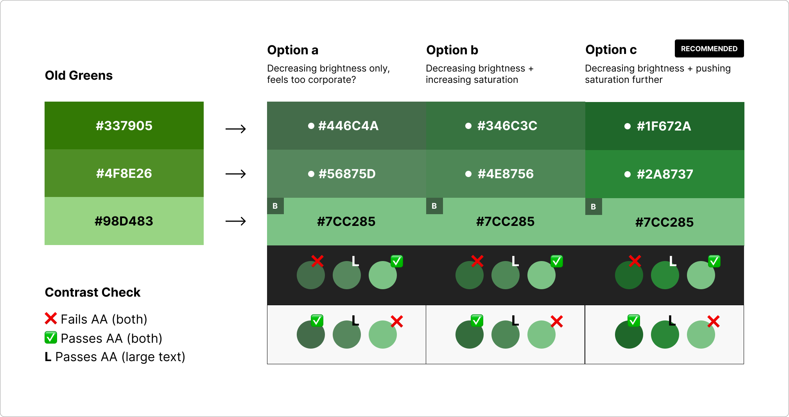
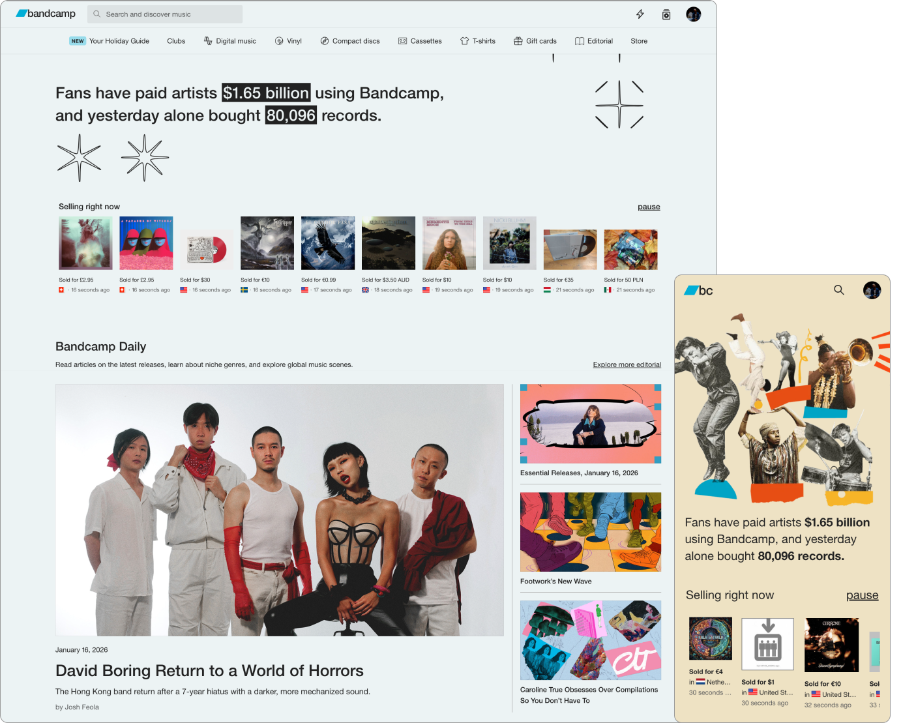

Overview
(~7 mins)
01. Context
At the start of 2022, feature teams at Bandcamp were slowing down. Years of quick shipping by isolated teams without a single source of truth meant that even tenured designers were confused about “how we designed things at bandcamp”. This led to development timelines being unecessarily inflated by recreating pre-existing components every cycle. More importantly, the resulting lack of visual consistency left our users confused - and they were starting to let us know about it in user interviews.
With hiring on the rise, timelines tightening, and Bandcamp Friday bringing a lot of new traffic to the site, a small group consisting of me (design co-lead), Thomas Clegg (design co-lead) and Eve Essex (dev lead) petitioned leadership to form Bandcamp’s first design system team. Our goal was to create a site-wide design standard for how we built things at the company, and to empower teams to move faster while creating trustworthy tools for the artists and fans we championed.
02. Constraints
Buy-In
We knew that getting busy feature and brand teams to buy into the idea of adopting a design system would be a tough sell. Not only would we have to demonstrate the value of investing the time and effort, but we would have to make the process of adopting it easy and relatively seamless.
Flexibility
We had to guarantee that our system would be flexible enough to serve the most unique use cases on site. This meant that standardizing core + low-complexity components was the priority. Adoption depended on our humility, an acceptance that while we couldn’t afford to build complex patterns that anticipated every possible product challenge, we could humbly offer a baseline set of tools to help teams solve them.
03. Site Audit
We began our process by auditing the foundational elements used across the site. I focused on cataloging every instance of type, color, grids and inputs/controls. Thomas focused on logos and brand elements, cards, depth, and navigation patterns. Eve advised us on whether the instances we cataloged were fundamentally distinct and ran WCAG compliance checks.
The resulting database turned our vague impressions of our problem into insights that tightened our scope. It was clear that we had problems with visual inconsistency - there were 40+ type styles, 20+ blues, several variations of important system colors, and different grids for each feature area. But we also had instances of basic controls, inputs, and navigation patterns that were built solely for use in a particular feature, meaning that engineers on other teams had to create their own versions (adding to our technical debt). Finally, lack of ARIA labeling, keyboard navigation, and color contrast for important elements meant that we weren't accommodating users who relied on assistive technologies. These findings formed the foundation of our system work.

A snapshot of radio buttons cataloged in our audit table
Next, we pinpointed specific areas that captured the content extremes of the Bandcamp experience. This grounded our investigation in the most business-critical use cases, and set us up to test the standards we were developing. I identified three key areas:
Home
This is the heart of the BC experience. It features multiple sections with varying type scales, image sizes, site-wide playback patterns, and navigational options. I knew that if a standardized grid could accommodate this level of density, it would be robust enough to support any of our other content needs.

Bandcamp's homepage with multple modules
Bandcamp Daily
This the cornerstone of our editorial experience. These pages accounted for a significant percentage of our type variance (they contain the most text, period) and they feature all of the major fan actions. An approach to type that preserved the hierarchy of editorial content, and distinguished it from track metadata and fan actions would be successful in almost every other context. I also knew that if I could refine and standardize the action buttons here, teams would be able to easily adapt the various control types to their unique use cases.

A Bandcamp Daily article with various type styles
Artist Tools
Features like Bandcamp Live, Vinyl, Listening Parties, and our upload portal all required users to complete multi-step forms with complex inputs. I knew that inputs themselves varied across these surfaces, but deeper exploration revealed that our approaches to signaling success/failure/saved states, progressively disclosing information, and guiding users to help docs were also inconsistent. I identified this as an opportunity to not only formalize inputs, but to investigate wayfinding practices, system colors, and various state affordances.

The information and action dense album upload tool
04. System Foundations
Grid
Our grid system had to be flexible enough to support all of our product surfaces. Given the time-sensitivity of this work, I decided not to reinvent the wheel - a 12 column grid and 8pt spacing were well suited for common screen sizes and provided the perfect amount of adaptability. I just had to set parameters that accounted for unique feature needs.
I approached this by recreating key pages in Figma, using successes and failures to refine grid values and strictness - the narrow margins that were ideal for Live, rendered BC Daily articles unreadable. The gutters that allowed for clean rows of cards on Home, created gaps that broke form continuity. This meant that I had to allow for some experiences to occupy fewer columns, for content to “float freely” when necessary. Situational flexibility was more valuable than strict consistency.

Hitting the limits of a strict grid on Home
I used data on our most popular screen sizes to set 4 breakpoints (XL, L, M, S) and responsive margin and gutter values that would determine the width of page content. To refine these values and build consensus among stakeholders, Eve and I built and further stress-tested the grid in Storybook. This work culminated in the creation of a flexible and responsive grid system that could accomodate all of our content needs at all screen sizes.

Discovery Tool at M Breakpoint (1280dp)
1. Fixed 32px Margins
2. Fixed 24px Gutters
3. 12 Flexible Columns
Discovery Tool at S Breakpoint (430dp)
4. Fixed 16px Margins
5. Fixed 16px Gutters
6. 4 Flexible Column
Type
Simplicity was the guiding philosophy for type. While color, case, and decoration accounted for a ton of our type style variance, the need to ship quickly pushed me to keep type tokens focused on weight, size, and spacing. For the other properties I’d use a Tailwind CSS-like approach of treating them as seperate utilities we could apply to the core type token, narrowing the scope of my work and ensuring that teams could style text without needing to override baked-in properties.
I grouped similar type weights and sizes, giving me a rough sense of how many tokens we needed to clearly communicate hierarchy, state, and function. Variance among type groups was minimal, so I applied the 8pt rhythm to reduce ~70 near-duplicates to a core set of 9 type scale tokens, shedding excess and reinforcing the connection between type and grid.
I tested type tokens on the grid to pinpoint how they scale up/down to each other at different breakpoints, and packaged these rules by function (ex. display) - ensuring system users knew exactly where and how to use them, and to avoid confusion with html text tags.

A section of the type system organized by scale and weight
Color
Reducing color options required sacrificing the unrestricted expression of ~60 variables for the gains in consistency and accessibility that came with 28. I embraced this trade-off, confident that thoughtful and accessible color standards paired with playful brand imagery would inspire designers and users alike.
The first step was identifying key color families and determining whether they were functional or expressive - removing individual colors would be the wrong approach. To this end, I grouped audited colors by family, and partnered with brand designers to identify which were essential for their work. Brand design needs are often minimized in these efforts, and this step allowed me to eliminate 25% of our colors without fear of stifling creativity. I then applied consistent tints to the most important color in each family, creating the initial set of balanced color-tokens.

The initial set of color tokens - brand colors identified by "B"
I worked with teams to test these tokens in relevant feature and brand contexts, balancing stakeholder feedback with non-negotiable WCAG contrast requirements to ensure that AA legibility didn’t mean our colors were muddy or dull. The result was a set of 28 accessible, functional, and fun color tokens that managed to capture our brand and product needs, while reducing the range of options by 50%.

Balancing feedback and accessibility requirements
05. Results & Takeaways
We made a deliberate decision to rollout this work in phases, beginning with the foundations. Teams adopted this work in about ~3 months, but the resulting improvements in site-consistency and shipping velocity more than justified the effort. In just 2 months, Home and our marquee artist tools were redesigned according to our system. New features like listening parties and shared playlists were shipped shortly thereafter, with shipping timelines reduced by ~13%.

The redesigned Home and Artist pages with updated type, color, and grid
This project reinforced my ability to ground and communicate decisions at a company-wide level. Acceptiing difficult trade-offs was unavoidable at this scale, but in the process I was able to turn constraints into opportunities that could be unlocked by constant collaboration, and helped to create a system that is being used to create the more consistent and trustworthy Bandcamp artists and fans deserve.
Overview
(10 mins)
01. Context
At the start of 2024, a group of designers and devs at Bandcamp realized that years of quick shipping by isolated teams armed with only the loosest standards was preventing us from growing how we imagined we could. No single source of truth meant that new hires were frequently confused about “how we designed things at bandbandcamp”, making ramping up a frustrating and time-consuming task for learners and experienced designers alike. Designers and devs on different feature teams were recreating similar components almost quarterly, inflating development timelines. Most importantly, the resulting lack of visual consistency left our users confused - and they were starting to let us know about it. With hiring on the rise, dev timelines tightening, and Bandcamp Friday bringing a lot of new traffic to the site, it was time to standardize our 40+ type styles, reduce our 20+ shades of blue, and standarize common components. A small but mighty design system team was formed - me (design co-lead), Thomas Clegg (design co-lead), and Eve Essex (dev lead) - to lay the foundation for Bandcamp's design system.
02. Constraints
Buy In
We knew that getting busy, semi-autonomous product teams to buy into the idea of adopting a design system would be a tough sell. Not only would we have to demonstrate the value of investing the time and effort, but we would have to make the process of adopting it easy and relatively seamless.
Adopting Vue.JS
Bandcamp feature teams used slightly different tech stacks, and were in the process of migrating to Vue.js to standardize front end dev. This meant that our design system would have to be developed with an understanding of the strengths and limitations of Vue.
Flexibiliity
Finally, we had to guarantee that our system would be flexible enough to serve the most unique use cases on site. This meant that standardizing core + low-complexity components was the priority. Adoption depended on our humility, an acceptance that while we couldn’t afford to build complex patterns that anticipate every possible product challenge, we could humbly offer a baseline set of tools to help teams solve them.
03. Site Audit
We began our process by auditing the foundational elements used across the site, with the help of our various feature teams. I focused on cataloging every instance of type, color, inputs/controls, and grids, while Thomas focused on logos and brand elements, cards, depth, and image components and more. Our work produced a comprehensive database that allowed us to precisely pinpoint inconsistency, redundancy, and inaccessibiliity concerns.
While our audit gave us a birds-eye view of the state of our site elements, we decided to zoom in on particular areas of the site that would allow us to test the tokens and components we were hoping to dedupe/standardize. I focused my efforts on three key areas:
Home
This is the heart of the BC experience - it’s where users go to find new music, articles, and introductions to new features. The complex arragement of imagery, text, and navigational options made wayfinding and information hierarchy essential here. This was a natural starting point for me to strategize around and eventually stress-test a grid system.
Bandcamp Daily
This is a BC Daily article, the cornerstone of our editorial experience. These pages accounted for a signifcant percentage our type variance (they contain the most text, period) and all of the major listener actions, which made them the perfect laboratory for me to experiment with type and refine our buttons and playback controls.
Artist Tools
Bandcamp Live, Vinyl, Listening Parties, and our upload portal were the tent poles of our artist experience. These tools required users to provide us with important, and occasionally sensitive information, making user education a must. Naturally this was the perfect place to work on inputs, tooltips, and other form related elements. The sheer amount of links (we used blue to indicate clickability), error states and destructive actions, as well as success and saved states provideded valuable information about how me might want to treat system colors.
04. Framework
During the audit, we found that we were talking passed each other in our attempts to describe elements of different levels of complexity (we all were fans of different design system methodologies). Is it a molecule or a component? An atom or an element? If the goal of our work was to reduce dev and design time, make team-member education more efficient, and sell external stakeholders on the feasibility of our work, the amount of time the team was spending trying to make ourselves clear to each other wasn't a good sign. After discussing with my co-leads and chatting with engineers, feature teams, and other stakeholders, we decided to lean into fairly traditional terminology, confident that it would be easily adopted by the company’s end users and amenable to Vue implementation.
- ① Tokens: Text Styles, Color, Grid, Elevation, etc.
- ② Components: Buttons, Inputs, Labels, etc.
- ③ Patterns: Nav Bars, Forms, Cards, Carousels, etc.
- ④ Templates: Reproduceable groupings of the above


05. Accessiibility Audit
After settling on shared language, we collaborated with the accessibility team to make sure our consolidation efforts were guided by WCAG. We evaluated the accessibility of all the elements we cataloged, getting into the weeds on touch target sizes, color contrast, focus rings, alt text, etc, and compiled a list of recommended changes.
06. System Foundations
Armed with heaps of tokens to standardize and components to dedupe, along with an understanding of how to make them more accessible, we got to work laying the foundations for our design system. I focused on Type, Color, Grids, and Form Inputs.
Type + Grid
I established an 8-point grid with a set of 4 breakpoints based on our site’s most popular screen sizes (xl, l, m, s) and a responsive type system that could adjust in lock-step with our breakpoints. I landed on a streamlined set of 9 size tokens, each paired with 3 font weights (Helvetica Neue 400, 500, 700), and correspondingly responsive line heights. We assigned these tokens to header and body tags with the intention of using media queries to adjust type according to device size, while retaining semantic hierarchy.
Color
I centered my process around the most used version of each color, removing variants that were only slightly different, adjusting for AA compliance, and creating a limited set of tints and shades of each for use in various contexts. I remembered that we developed a bad habit of using system/functional colors (success greens, warning reds, etc.) as decorative colors, so one of my priorities was indicating what variants were strictly for indicating states/providing feedback and which were okay for use in general branding.
Controls + Inputs
I also standardized various controls and inputs, taking care to make accessibility improvements along the way.